Tres direcciones distintas, maquetadas con las fotos reales de la demo, frente al estado actual. Cada bloque compara la misma pantalla. Abre cada maqueta completa con los enlaces de abajo; el README de cada una explica paleta, tipografía y cómo entra el color de marca de cada salón.
Lo que ve quien llega por Instagram o WhatsApp. Desplaza dentro de cada captura.
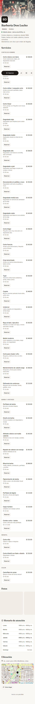
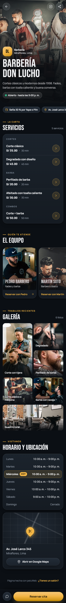
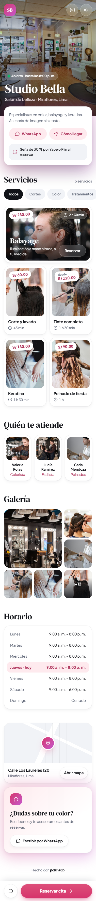
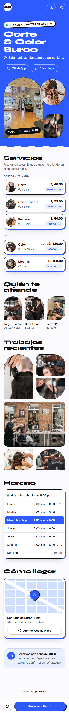
Cada salón elige su color: la dirección tiene que aguantarlo. Y el tema contrario al principal de cada propuesta.
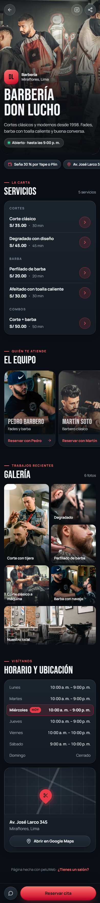
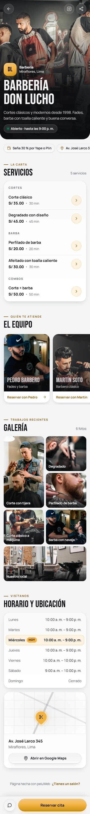
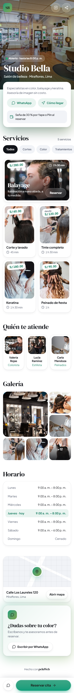
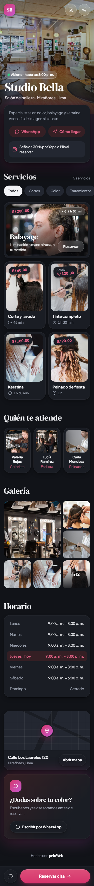
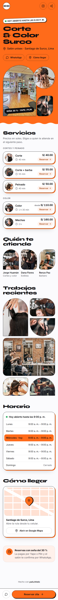
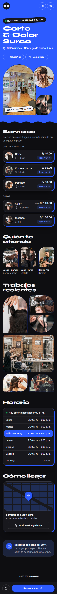
Tira de días, horarios por Mañana/Tarde/Noche, resumen y botón fijo.
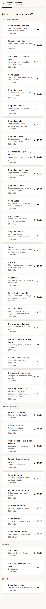
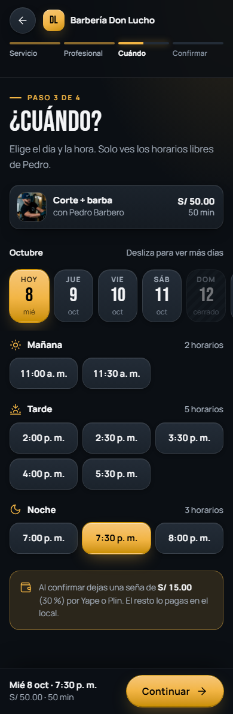
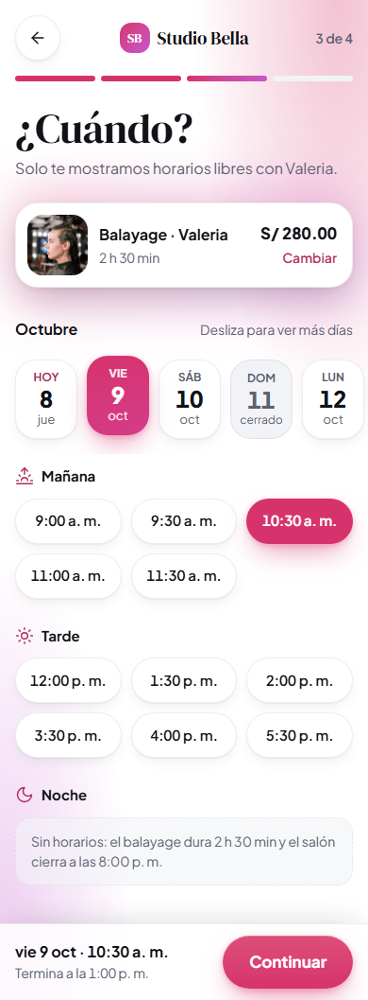
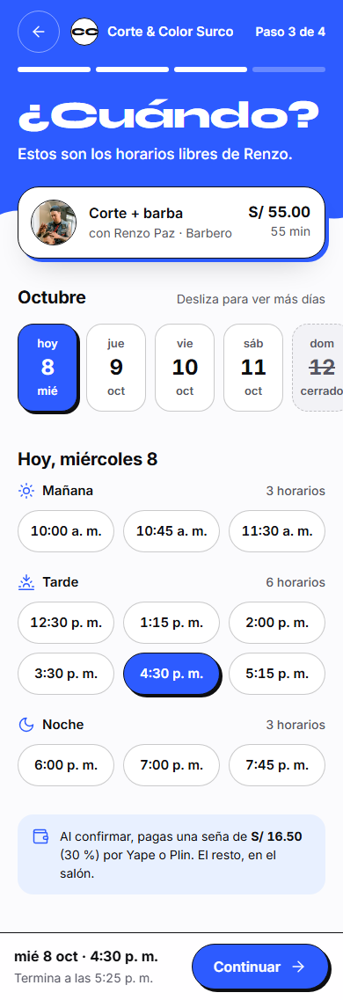
La que convence a una peluquería de darse de alta.
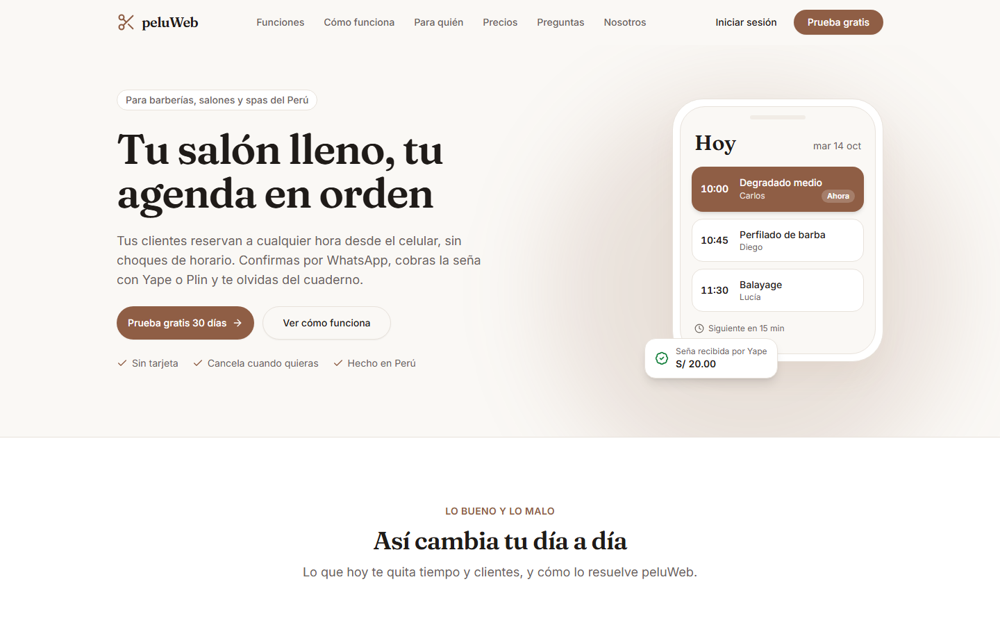
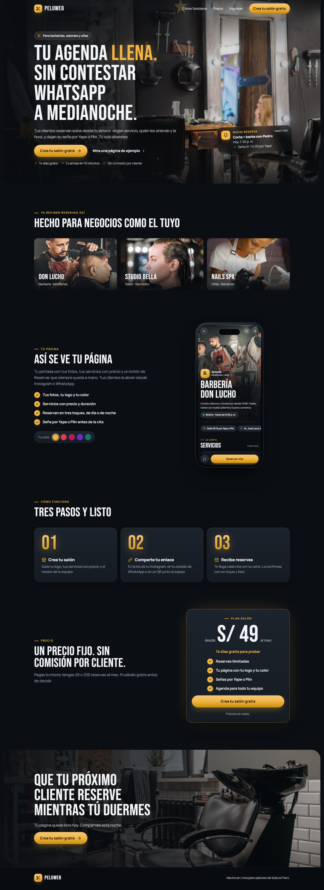
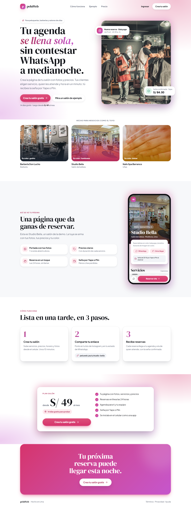
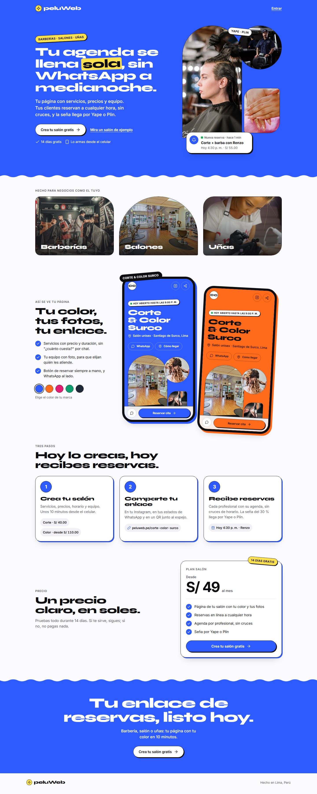
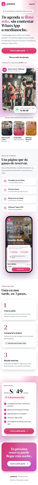
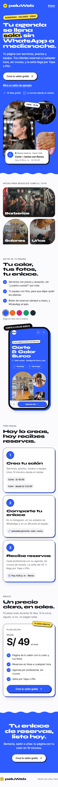
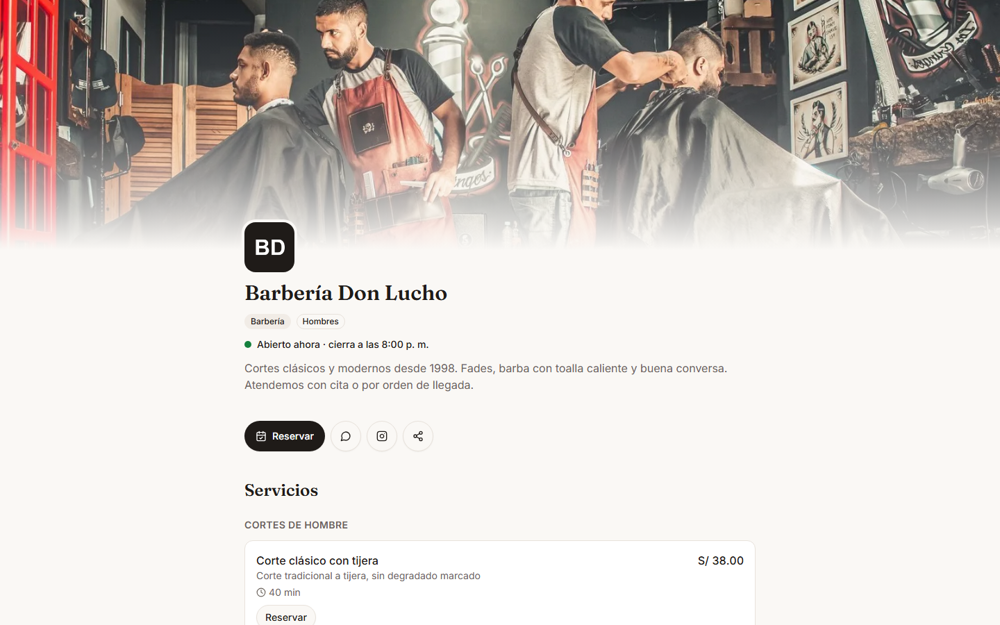
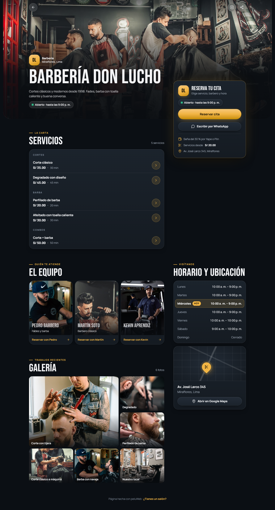
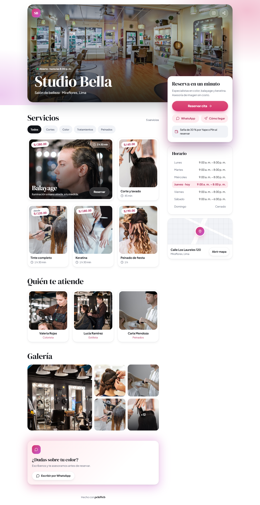
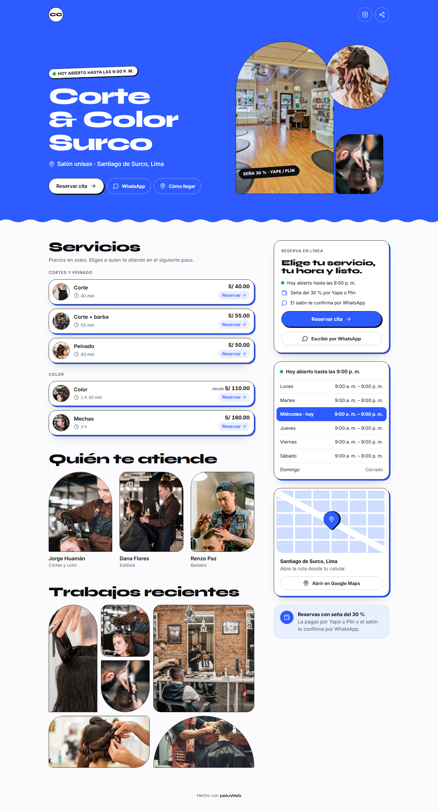